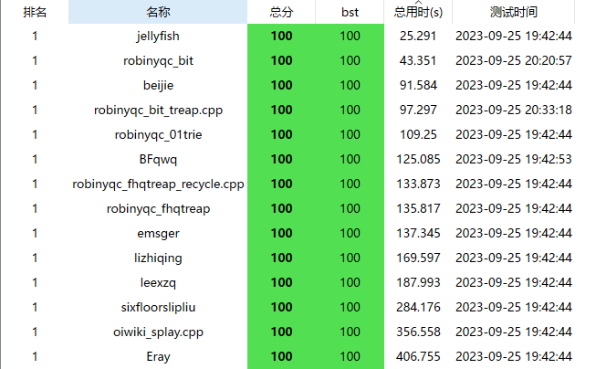

也许不是我发明的。但确实是我独立想出来的，没有任何人给我提到过这种做法。
没有平衡树榜一快：（
但是平衡树榜一和我一样不是树：）
有一定局限性。复杂度基于值域。大概是，时间复杂度
离线做平衡树很简单，离散化+树状数组。
那么在线怎么搞呢？发现不能离散化，值域就太大，空间开不下。
那我就平衡一下，类似于桶排序。设一个数
接下来两种选择：
对于桶内部，我们用普通平衡树。实测运行时间是原来的
（下面接着讲的）对于桶内部，我们直接上插入排序+树状数组。插入的复杂度是
就这样就好了。注意一次插入虽然是
由于树状数组和插入排序都是很优秀的常数，所以
一个三元组（懒得用 pair 或者 tuple 了，难写）：
xxxxxxxxxxstruct Triple { int x,y,z; Triple():x(),y(),z() {} Triple(int _x,int _y,int _z):x(_x),y(_y),z(_z) {} bool operator <(const Triple &t) {return x<t.x;}};为了空间优秀我们需要一定的卡空间。
第一个优化是，原版的 vector 基础空间太大(24 bit)，我们可以手搓一个简化版。
xxxxxxxxxxclass Vector {public: Triple *begin; short cap,size; Vector():begin(),cap(0),size(0) {} void push_back(const Triple x) { if(size+1>cap) { if(cap) { Triple * tmp=new Triple[cap<<1](); for(int i=0;i<cap;i++) tmp[i]=begin[i]; delete []begin; begin=tmp,cap<<=1; } else { cap=1; begin=new Triple(); } } begin[size++]=x; } Triple* end() {return begin+size;} Triple& operator [](int x) {return begin[x];}};第二个优化是，有值的桶只有
xxxxxxxxxxclass HashTable {public: HashTable() {memset(head,-1,sizeof(head));} void insert(int x,int y) { int z=x&H1; next[tot]=head[z]; head[z]=tot; kv[tot].first=x,kv[tot].second=y; tot++; } int find(int x) { int z=head[x&H1]; while((~z)&&kv[z].first!=x) z=next[z]; if(z==-1) return -1; return kv[z].second; }private: static int tot; static pair<int,int> kv[N]; static int next[N]; int head[H];};pair<int,int> HashTable::kv[N];int HashTable::next[N];int HashTable::tot;这样空间已经到极限了。还要卡空间需要调整
桶内显然需要支持插入删除名次和第
xxxxxxxxxxclass FlatSet {public: Vector v; FlatSet():v() {} void insert(int x) ; void erase(int x) ; int rank(int x) ; int kth(int k) ;private: void add(int x) {++v[x].z; for(++x;x<=v.size;x+=x&-x) ++v[x-1].y;} void dec(int x) {--v[x].z; for(++x;x<=v.size;x+=x&-x) --v[x-1].y;}} ;插入最复杂。使用插入排序。然后还需要调整树状数组。一个方法是用线性构造树状数组的方法完全重构树状数组，复杂度
更优秀的方法是，先照常使用插入排序，然后调整树状数组：注意到，每个元素都只往后移了一位，所以树状数组每个下标管辖的区间只有两个值发生了变化。这一步复杂度是
Triple::x 表示这个位置的值（这样才能保证空间复杂度），Triple::y 表示这个树状数组这个位置管辖的区间的元素数量，Triple::z 表示这个位置的元素数量。
xxxxxxxxxxvoid insert(int x) { if(v.size) { auto P=Triple(x,0,0); auto it=lower_bound(v.begin,v.end(),P); if(it!=v.end()&&it->x==x) {add(it-v.begin); return ;} } int i=(int)v.size-1; v.push_back(Triple(0,0,0)); // 还可以考虑暴力重构 for(;~i;i--) { if(v[i].x>x) { v[i+1].x=v[i].x,v[i+1].y-=v[i+1].z; v[i+1].z=v[i].z; } else break; } int nw=++i,tg,s=0; v[i]=Triple(x,v[i].y-v[i].z,0); for(;i<v.size-1;i++) { tg=i+1-((i+1)&(-i-1)); if(tg>nw) v[i].y+=v[tg].z; } tg=v.size&-v.size,i=v.size-tg; for(;tg;tg>>=1) if(i+tg<v.size) i+=tg,s+=v[i-1].y; v[v.size-1].y=s+v[v.size-1].z; add(nw);}直接二分查找然后删除就可以了，
xxxxxxxxxxvoid erase(int x) { auto it=lower_bound(v.begin,v.end(),Triple(x,0,0)); dec(it-v.begin);}二分后树状数组：
xxxxxxxxxxint rank(int x) { int r=0; x=lower_bound(v.begin,v.end(),Triple(x,0,0))-v.begin; for(;x;x&=(x-1)) r+=v[x-1].y; return r;}树状数组套倍增：
xxxxxxxxxxint kth(int k) { int p=0,g=v.cap,s=0; for(;g;g>>=1) if(p+g<=v.size&&s+v[p+g-1].y<k) p+=g,s+=v[p-1].y; return v[p].x;}类似内层树状数组找到对应块求解。
xxxxxxxxxxclass BlockFenwickTree {
public: BlockFenwickTree():tot(),h() {}
void insert(int x) { int y=x>>Bb; add(y); int z=h.find(y); if(z==-1) h.insert(y,z=tot),tot++; val[z].insert(x); } void erase(int x) { int y=x>>Bb; dec(y); val[h.find(y)].erase(x); }
int rank(int x) { int y=x>>Bb; return val[h.find(y)].rank(x)+ask(y)+1; }
int kth_element(int k) { int p=0,g=VB,s=0; for(;g;g>>=1) if(p+g<=VB&&s+c[p+g]<k) p+=g,s+=c[p]; return val[h.find(p)].kth(k-s); // }
int prev_element(int x) {return kth_element(rank(x)-1);}
int next_element(int x) {return kth_element(rank(x+1));}
private:
class FlatSet {} ; ///< 上文有，略 FlatSet val[N];
int tot; // 模拟 32 位指针 HashTable h;
int c[VB+1];
void add(int x) {for(++x;x<=VB;x+=x&-x) ++c[x];} void dec(int x) {for(++x;x<=VB;x+=x&-x) --c[x];} int ask(int x) {int res=0; for(;x;x&=(x-1)) res+=c[x]; return res;}};这样这个数据结构就搞定了！
如下是各类平衡树最基础应用的评测。
数据格式：洛谷 普通平衡树（数据加强版）（不加加密，大家心里知道是不是在线的）
数据范围：
单点时间限制：30s
单点空间限制：1024MB（实际远远达不到）
评测环境：LemonLime V0.3.4:223
评测系统：Windows 10 专业版 1709
CPU：Intel(R) Core(TM) i3-6100 CPU @ 3.70GHz 3.70 GHz
RAM：8.00 GB
都使用了如下读入模板：
xxxxxxxxxxnamespace myio { char buf[1<<15],*p1=buf,*p2=buf; int read_int() { int x=0; char ch; while(!std::isdigit(ch=getchar())) ; do x=(x<<1)+(x<<3)+(ch^48); while(std::isdigit(ch=getchar())); return x; }}
jellyfish 是普通平衡树目前可见的榜一 CodingJellyfish 的实现。
robinyqc_bit 就是前面所提到的做法。